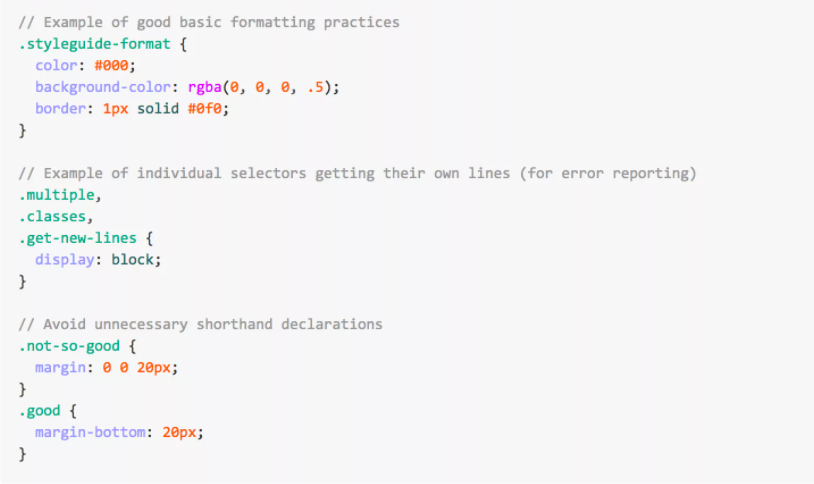

С аббревиатурой HTML сталкиваются специалисты, которым по роду деятельности приходится делать сайты, наполнять их контентом и продвигать в поисковых системах. Копирайтеры используют этот язык для форматирования текстов и таблиц, а SEO-специалисты с его помощью подключают виджеты и системы аналитики.
Что представляет собой HTML
Формально HTML (Hypertext Markup Language) считается языком разметки веб-страниц. Результат интерпретируется браузером, и пользователь видит текст на экране компьютера или смартфона в заданном разработчиком виде. Первые сайты создавались практически на «чистом» коде HTML при незначительном включении скриптов на JavaScript.
История развития HTML
Точной даты создания языка HTML нет, его появление соотносится с периодом между 1986 и 1991 годами. Он изначально создавался для использования людьми без специальных знаний в верстке и программировании. Сложная система разметки SGML (Standard Generalized Markup Language) была сведена к небольшому набору дескрипторов. Они чаще называются тегами.
К актуальной относится версия HTML 5-го поколения. Она появилась в декабре 2012 года и выросла до релиза 5.3. Именно это поколение языка разметки поддерживается большинством браузеров. При использовании устаревших версий вероятно искаженное отображение. Существует понятие кроссбраузерной несовместимости сайта, когда он по-разному выглядит на разных устройствах. Изменения преимущественно касались внедрения новых функций. Например, появилась поддержка ввода типов данных – даты и времени, адреса электронной почты, домена сайта. Также в новые релизы включили дополнительные элементы вроде добавления видео и звука на веб-страницу, рисования в указанной области при помощи скрипта JavaScript.
Возможности HTML
Особенность языка разметки HTML заключается в преобразовании простых команд в визуальные объекты. Например, тег < img > используется для отображения картинок. В перечне атрибутов есть обязательный – ссылка на файл. Изображение же обычно хранится на накопителе удаленного сервера, где располагается сам ресурс или внешний сервис.
Что не получится сделать на HTML
Несмотря на относительно обширный список возможностей по форматированию страниц, в HTML нет целого перечня функций. Например, теги позволяют оперировать стандартным шрифтом, а вот заменить его не получится. Компенсируют функционал подключением таблицы стилей CSS – это отдельный язык описания внешнего вида HTML-документов.
В итоге дизайн ресурса становится более интересным, скорость загрузки возрастает за счет меньшей нагрузки на сервер. Вместо дублирования кода на каждой странице при использовании HTML есть возможность вставлять небольшую ссылку на нужный участок кода. При изменении шаблона файл CSS остается неизменным, что упрощает редактирование сайта.
Сам по себе HTML работает довольно «топорно», требует дублирования команд на каждой странице. Это нерационально, например, при формировании общих элементов типа шапки, подвала, общего меню. Технология CSS позволила создавать фирменное оформление независимо от шаблона. Стоит подключить нужный участок кода, и страница преображается.